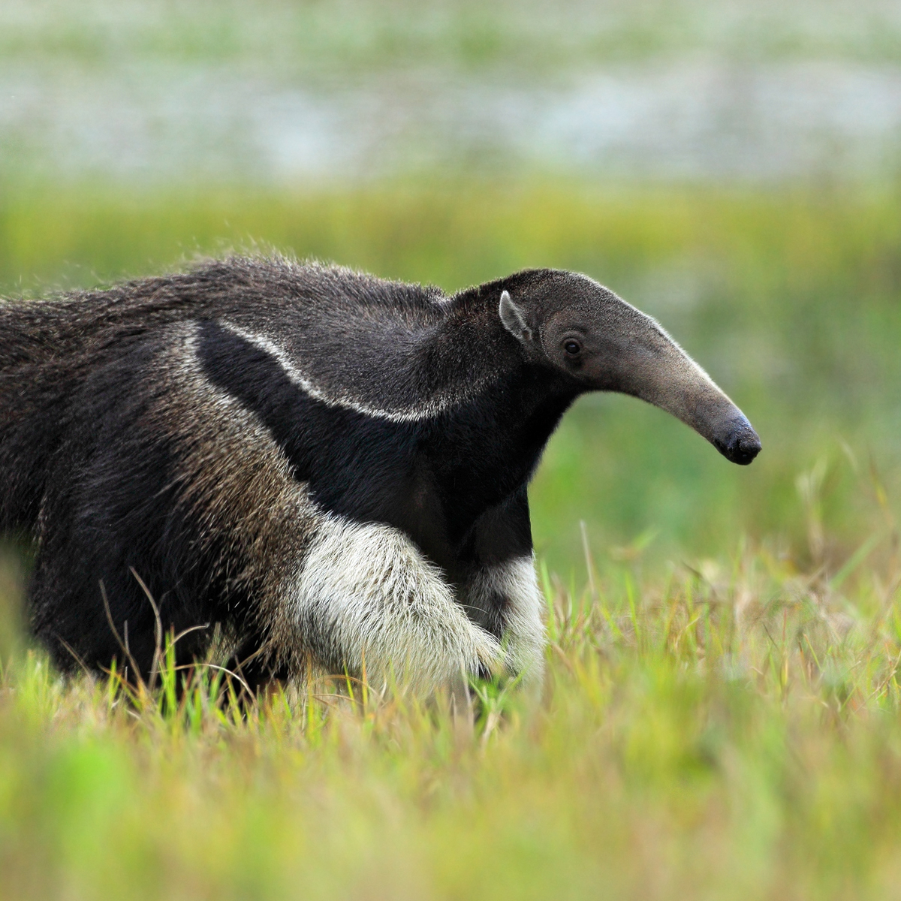
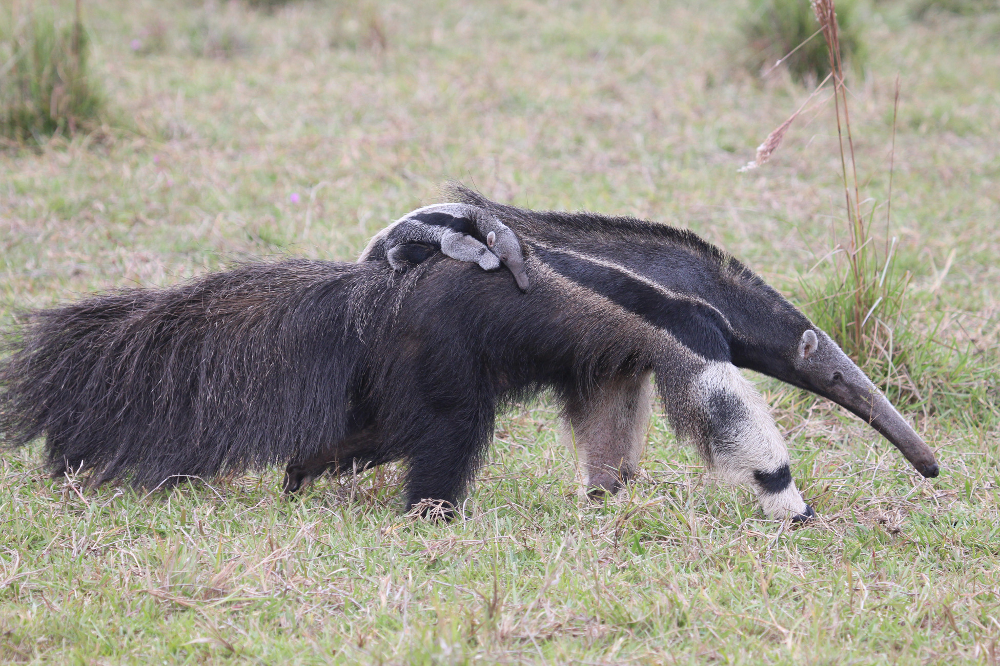
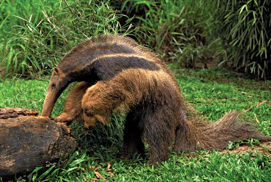
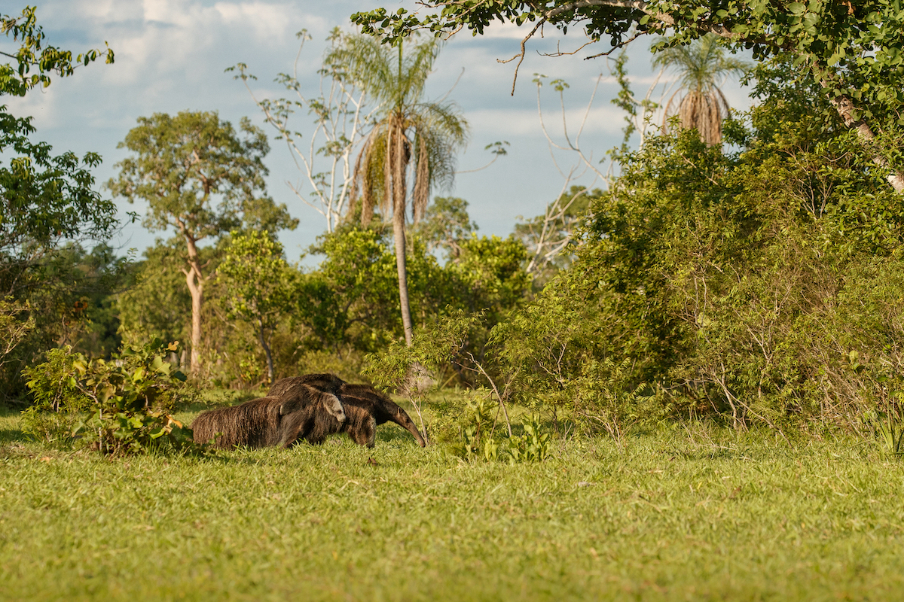
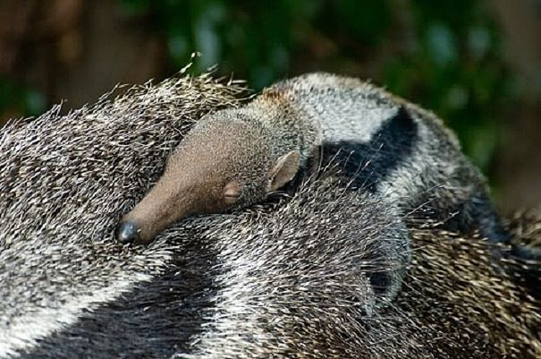

Giant Anteaters
About the Giant Anteater
Description and Size
Giant anteaters are as their name states; giant! From their nose to their tail, an average giant anteater can reach up to 8 feet long. Thy have a very distinctive, long snout that houses a two foot long tongue. The fur of the giant anteater is described more like the hair of a horse's mane. It's bushy, but course rather than fluffy.
Diet
The diet of the giant anteater is almost exclusively ants and termites. The anteater can sniff out what species of ant/termite is in the hill it is about to rip apart. Some anteaters even have a preference of species. Giant anteaters get thair water from what they eat or from rainwater on plants. They rarely drink from other water sources. 
Habitat
This anteater species lives in the wetlands, grasslands, and tropical forests of Central and South America. However, they are considered extinct in Guatemala, Uruguay, and El Salvador.
Conservation Status
Giant anteater are considered vulnerable on the conservation list. This is due to habitat loss, dietary specificity, and low reproductive rates. Many zoos make efforts at conservation for endangered animals, including the local Chattanooga Zoo. This zoo has personal encounters with a giant anteater with the proceeds going towards conservation efforts.
